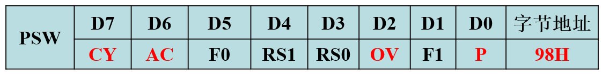
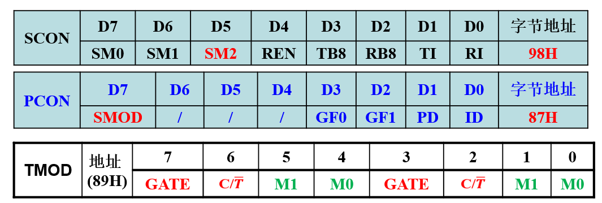

第二章节
P43 1 填空题
（1）若不使用MCS-51片内程序存储器，引脚
（2）8051内部在物理上有2个独立的存储空间。
（3）当使用8071且EA=1,程序存储器地址小于1000H时，访问的是片内ROM。
（4）MCS-51有四组工作寄存器，它们的地址范围是00H~1FH。 重点
（5）若(PSW)=18H,则有效R0的地址为18H。

（7）单片机程序存储器的寻址范围是由程序计数器PC的位数决定的，因为MCS-51的PC为16位，因此其寻址范围为0000H-FFFFH，寻址空间大小为64KB。 重点
（8）MCS-51单片机的复位方式主要包括上电方式和按键方式。
2 简答题
（4）程序存储器中有哪几个具有特殊功能的单元？分别作什么用？
（5）MCS-51单片机内低128B的数据存储器可分为哪几个区？分别作什么用？ 重点
（7）8051单片机有多少根引脚？有几根控制引脚？这些控制引脚的作用是什么？哪些引脚有第二功能？
（9）单片机复位有几种方法？系统复位后特殊功能寄存器的初始值为何？重点
SP=07H P0~P3=FFH 其余可以写成全部0，SBUF寄存器是未知数，为上次保留的值，通常也是0
第三章节
P79 1.填空题
在程序存储器中的数据表格为
程序 1000H: MOV A,#0DH 1002H: MOVC A,@A+PC 1003H: MOV R0,A
执行后的结果： （A）=02H,(R0)= 02H,PC=1004H
2 假定累加器A的内容为30H，执行指令: 1000H:MOVC A,@A+PC
会把程序存储器1031H单元的内容传送累加器A中。
3 假定(A)=85H,(R0)=20H,(20H)=0AF,执行指令:ADD A,@R0后，累加器A的内容为34H，CY的内容为1，AC=1，OV=1。
（4）假定(A)=7AH,(R0)=30H,(30H)=A5H,PSW=80H,问执行一下各条指令后的结果： 重点
2 简答题
（1）指出下列指令的寻址方式：
（2）已知片内RAM中，(30H)=70H,(40H)=71H,执行下列一段程序后，试分析有关单元内容。
MOV R0,#30HMOV A,@R0MOV @R0,40HMOV 40H,AMOV R0,#60H- (R0)=30H
- (A)=70H
- (30H)=(40H)=71H
- (40H)=(A)=70H
- (R0)=60H
（3）试说明每一条指令的作用，已知(A)=34H。 重点
xxxxxxxxxxMOV R6,#29H; (R6)=29HXCH A,R6; (A)=29H, (R6)=34HSWAP A; (A)=92HXCH A,R6; (A)=34H; (R6)=92H（4）试说明每一条指令的作用，执行后R0的结果为多少。
xxxxxxxxxxMOV R0,#72H； XCH A,R0； SWAP A； XCH A,R0；(R0)=27H
（5）阅读下列程序，说明其功能。
xxxxxxxxxxMOV R0,#50H； (R0)=50H MOV A,@R0； (A)=(50H)RL A; (A)=(50H)<<1MOV R1,A; (R1)=(50H)<<1RL A; (A)=((50H)<<2RL A; (A)=((50H)<<3ADD A,R1; (A)=((50H)<<3+ (50H)<<1MOV @R0,A; (50H)=((50H)<<3+ (50H)<<13 编程题
（1）把片内RAM 40H单元的内容传送至片外RAM 2230H单元中。 书本57页
xxxxxxxxxxMOV DPTR,#2230HMOV A,40HMOVX @DPTR,A（2）试编写一段程序，将P1端口的高5位置位，低3位保持不变。重点
xxxxxxxxxxORL P1,#0F8H或者ORL P1,#1111 1000B（3）试编写一段程序，讲R2中的各位倒序排列后送入R3中。 了解
xxxxxxxxxxMOV R3,#00H; R3初始化为00HMOV A,R2 移位运算只能在A寄存器中RRC A; D0移位到CY中MOV R2,A; 把移位后的值保存到R2MOV A,R3; 此时(A)=00HRLC A; 此时CY移动到第0位到此，只要再重复7次,A寄存器的值就为R2（4）设D、E、F为位变量，试编程实现E、F内容的“同或”功能，结果送入D中。 了解
xJB E，E1;首先判断E是不是1，是1跳转到E1标号 JB F,ZERO;表示E=0,F=1，所以同或结果为0JMP ONE;表示E=0,F=1，所以同或结果为0
E1:JB F,ONE;F如果是1，表示E=1,F=1，所以同或结果为1JMP ZERO;F是0，表示E=1,F=0，所以同或结果为0
ZERO:CLR DJMP EXITONE:SETB DEXIT:SJMP $（5）试编写程序，查找片内RAM的20H-50H单元中是否有0AAH这一数据。若有这一数据，将51H单元置为01H，否则置为00H。 了解
xxxxxxxxxxMOV R0,#20H;RAM的起始地址为20HMOV R1,#31H;总共有31个单元LOOP:CJNE @R0,#0AA,S1;如果@R0 ≠ 0AA，则跳转到S1标号JMP ONES1:INC R0DJNZ R1,LOOPJMP ZERO
ONE:MOV 51H,#01HZERO:JMP EXITEXIT:MOV 51H,#00HSJMP $xxxxxxxxxxvoid main(void){ char i; char *p=0x20; char *p2=0x51; *p2=0x00; for(i=0;i<31;i++) { if(*p==0xaa) { p++; *p2=0x01; break //break 可以跳出for循环 } }}第四章节
P98 2.编程题
（1）将片内RAM 30H-3FH单元的内容传送到片外RAM的3000H开始的存储单元。
xxxxxxxxxxORG 0000HMOV R0,#10H; 循环次数为16MOV R1,#30H； RAM起始单元MOV DPTR,#3000H；片外RAM起始地址LOOP:MOV A,@R1MOVX @DPTR,AINC DPTRINC R1DJNZ R0,LOOPWAITE:SJMP WAITExxxxxxxxxxvoid main(void){ int i; unsigned char xdata *p=0x3000; /* 指针指向片外RAM3000H单元 */ unsigned char data *ps=0x30; /* 指针指向片内RAM30H单元 */ for(i=0;i<16;i++) { *p= *ps; p++; /* 指针指向下一单元，P指向3001H */ ps++; } }第五章节
P136 2.编程题
（1）将8051单片机外部数据存储器地址2000H-2FFFH存储空间写入55H。
xxxxxxxxxxvoid main(void){ int i; unsigned char xdata *p=0x2000; for(i=0;i<4*1024;i++) { *p=0x55; p++; }}第六章节
1 填空题 重点
1 采用中断技术是解决资源竞争有效合理的方法，可使多任务共享一个CPU。
2 定时/计数器0的中断请求标志位TF0，定时器/计数器1的计数溢出标志位是TF1。
3 外部中断0的中断向量是0003H，串行中断的中断程序入口地址是0023H。
6 外部中断的请求方式通过寄存器TCON的控制位可定义为电平触发或脉冲触发。
7 系统复位时IE为00H，即关闭所有的中断。
2 简答题 重点
（1）某应用系统要求中断优先级由高到低的优先顺序为如下两种情况时，分别编写其完整的初始化程序。
1)外部中断1、定时器1、串行中断、外部中断0、定时器0

xxxxxxxxxxMOV IE,#9FHMOV IP,#1CH2)外部中断0、定时器1、定时器0、外部中断1
xxxxxxxxxxMOV IE,#8FHMOV IP,#09H3 应用设计题 重点*
8051单片机的硬件连接如下图所示（其中电源、复位、振荡电路省略），晶振的频率为6MHz，试分别用中断方式和查询方式编写程序，实现如下功能：
系统上电后，LED0、 LED1、LED2、LED3同时亮2s后灭。
按键SA1按下后， LED0、LED1、LED2、LED3分别亮1s后熄灭的单灯顺序亮灭循环。
按下SA2按下后，LED0、LED1、LED2、LED3同时同步进行亮1s灭1s的闪烁。
按键SA1的操作优先于按键SA2。
xxxxxxxxxxsbit led0=P1^0;sbit led1=P1^1;sbit led2=P1^2;sbit led3=P1^3;void delay(int ms){ int i; unsigned char j; for(i=0;i<ms;i++) for(j=0;j<128;j++);//因为一个for循环是8个机器周期}void interrupt_init(void){ IT0=1; //下降沿触发 EX0=1; //外部中断0的开关 EA=1; //总开关Enable all PX0=0; //配置成低优先级 IT1=1; //下降沿触发 EX1=1; //外部中断1的开关 EA=1; //总开关Enable all PX1=1; //配置成高优先级}void int0_service(void) interrupt 0{ while(1) { led0=0;led1=0;led2=0;led3=0; //可以改成P1=0X00 delay(1000); led0=1;led1=1;led2=1;led3=1;//可以改成P1=0X0F delay(1000); }}
void int1_service(void) interrupt 2{ while(1) { led0=0;delay(1000);led0=1; //led0亮1s再熄灭 led1=0;delay(1000);led1=1; //led1亮1s再熄灭 led2=0;delay(1000);led2=1; //led2亮1s再熄灭 led3=0;delay(1000);led3=1; //led3亮1s再熄灭 } }
void main(void) { led0=0;led1=0;led2=0;led3=0;//可以改成P1=0X00 delay(2000); led0=1;led1=1;led2=1;led3=1;//可以改成P1=0X0F interrupt_init(); while(1); }第七章节
P160 1 填空题
（2）定时器0工作于方式2的计数模式，初值设置为156，若通过引脚T0输入周期为1ms的脉冲，则定时器0的定时时间为100ms
方式2的计算公式为： 计数个数=28-计数初值 计数个数=256-156=100 每来1个负脉冲时间是1ms，所以计数100个负脉冲的时间是100ms
2 应用设计题 重点
（1）MCS-51单片机外接晶振频率为6MHz，使用定时器1，使得在P1.0输出周期为400us、占空比为10%的方波脉冲，以查询或中断方式编程实现。
==注意：当管脚周期为超过100ms时候，建议选择方式1，为何呢？因为执行i++运算也会花掉时间==
小于1ms的时候。建议选择方法2，因为方式2是自动重装载计数器。
P1.0输出周期为400us，占空比为10%的方波脉冲，则高电平持续时间为：400us*10%=40us，低电平持续时间为360us。设置定时时间为40us，只需要20个数就能完成需求，故可以工作在方式0,1,2。当定时时间小于256us时候，推荐大家选择方式2，因为他是一个自动重装载定时器/计时器。定时时间40us的选择跟例4很像，当然也可以选择10us，20us。
xxxxxxxxxxsbit P1_0=P1^0;unsigned int i=0; //对中断的个数进行计数void interrupt_init(void){ ET1=1; //定时器1的中断开关 EA=1; //中断总开关 PT1=1; //定时器1配置为高优先级 }
void timer1_init(void){ TMOD=0X20; //设置为方式2，定时器模式，GATE为低电平 TL1=256-20; // 计数20个，机器周期2us，所以是定时40us TH1=TL1 //方式2 TH=TL TR1=1; // 启动定时器1 Timer1 run}//中断方式不用软件清除TF标志位// 100us 来一次中断void timer1_service(void) interrupt 3{ i++;//来一次中断，变量i加1 if(i==9)P1_0=1; if(i==10) { P1_0=0; i=0; }}void main(void){ interrupt_init(); //中断初始化 timer1_init(); //定时器1初始化 P1_0=0; while(1); //死循环，等待中断}（3）使用定时器T1定时，每隔10s使与P1.0口连接的发光二极管闪烁3次后熄灭，每次闪烁时亮0.5s灭0.5s。设P1.0高电平灯亮，低电平灯灭。假设晶振频率为12Mhz。
==注意：当管脚周期为超过100ms时候，建议选择方式1，为何呢？因为执行i++运算也会花掉时间==
小于1ms的时候。建议选择方法2，因为方式2是自动重装载计数器。
xxxxxxxxxx//方式1sbit P1_0=P1^0;unsigned int i=0; //对中断的个数进行计数void interrupt_init(void){ ET1=1; //定时器1的中断开关 EA=1; //中断总开关 PT1=1; //定时器1配置为高优先级 }
void timer1_init(void){ TMOD=0X10; //设置为方式1，定时器模式，GATE为低电平 TL1=(65536-50000)%256; // 计数50000个，机器周期1us，所以是定时50ms TH1=(65536-50000)/256; //定时50ms TR1=1; // 启动定时器1 Timer1 run}//中断方式不用软件清除TF标志位// 100us 来一次中断void timer1_service(void) interrupt 3{ i++;//来一次中断，变量i加1 if(i==140)P1_0=1; // 7s/50ms=140 if(i==150)P1_0=0; // 7.5s/50ms=150 if(i==160)P1_0=1; // 8s/50ms=160 if(i==170)P1_0=0; // 8.5s/50ms=170 if(i==180)P1_0=1; // 9s/50ms=180 if(i==190)P1_0=0; // 9.5s/50ms=190 if(i==200)i=0; // 10s/50ms=200 //方式0 1中断到来必须重新写入计数初值 TL1=(65536-50000)%256; // 计数50000个，机器周期1us，所以是定时50ms TH1=(65536-50000)/256; //定时50ms }void main(void){ interrupt_init(); //中断初始化 timer1_init(); //定时器1初始化 P1_0=0; while(1); //死循环，等待中断}第八章节
P204 3 应用设计题
（2）试用8051单片机扩展1片程序存储器2764（容量为8K
xxxxxxxxxx51单片机片内ROM空间大小为8KB,范围为0000-1FFFH，题目要求扩展的外部RAM与内部ROM地址衔接，则外部RAM的起始地址为2000H，而外部RAM的空间大小为8KB，则外部RAM的地址范围为2000H-3FFFH。xxxxxxxxxxunsigned char xdata *p=0x2000;//定义一个指针void main(void ){ for(i=0;i<100;i++) { *p|=0x0f; //低4位置1 *p=*p|0x0f; p++; } while(1);}第九章节 重点*
1 51单片机，晶振频率为12MHz，要求波特率为9600bps,上位机为串口调试助手，下位机为乙单片机。编写下位机单片机程序，要求：
1 上位机发送00H，下位机收到00H指令后，让发光二极管亮，同时向上位机发送led on字符。
2上位机发送FFH，下位机收到FFH指令后，让发光二极管亮，向上位机发送led off字符。

串口编程三要素
1、串口初始化程序：串口初始化、定时器1初始化、中断初始化
2、串口发送程序：一般用查询方式编程
3、串口接收程序：一般用中断方式编程 公式死记硬背
xxxxxxxxxxunsigned char uart_temp;unsigned char led_on_str[6]="led on";unsigned char led_off_str[6]="led off";void uart_init(void){ //1 串口初始化 //或者对母亲赋值，SCON=0X50 SM0=0;SM1=1; REN=1; //选择方式1,10位可变波特率,允许接收 PCON=0;//波特率不倍增 //2 定时器初始化 TMOD=0x20; //选择定时器1，方式2 TL1=0X //根据波特率计算公式 TH1=TL1 TR1=1; //3 中断初始化 ES=1; EA=1; PS=1;}void SendOneByte(unsigned char c){ SBUF = c; //发送数据 while(!TI); //等待发送完毕，TI=1 TI = 0; //必须软件清零}
void uart_service(void) interrupt 4{ unsigned char i; if(RI==1) //判断是否是接收中断 { RI=0; //必须软件清零 uart_temp=SBUF; //取出数据 if(uart_temp==0x00) { led=1; //发光二极管亮，同时发送led on 字符 for(i=0;i<6;i++) { SendOneByte(led_on_str(i)); } } if(UartBuf==0xFF) { led=0; //发光二极管亮，同时发送led on 字符 for(i=0;i<7;i++) { SendOneByte(led_off_str(i)); } } } }void main(void){ uart_init(); while(1);}2 51单片机，晶振频率为12MHz，要求波特率为2400bps ,上位机为甲单片机，下位机为乙单片机，要求： 重点*
实现数据的回传功能。例如：上位机发送’aa’，下位机收到’aa’后向上位机发送’aa’。
串口编程三要素
1、串口初始化程序：串口初始化、定时器1初始化、中断初始化
2、串口发送程序：一般用查询方式编程
3、串口接收程序：一般用中断方式编程 公式死记硬背
xxxxxxxxxxunsigned char uart_temp;void uart_init(void){ //1 串口初始化 //或者对母亲赋值，SCON=0X50 SM0=0;SM1=1; REN=1; //选择方式1,10位可变波特率,允许接收 PCON=0;//波特率不倍增 //2 定时器初始化 TMOD=0x20; //选择定时器1，方式2 TL1=0X //根据波特率计算公式 TH1=TL1; TR1=1; //3 中断初始化 ES=1; EA=1; PS=1;}void SendOneByte(unsigned char c){ SBUF = c; //发送数据 while(!TI); //等待发送完毕，TI=1 TI = 0; //必须软件清零}
void uart_service(void) interrupt 4{ unsigned char i; if(RI==1) //判断是否是接收中断 { RI=0; //必须软件清零 uart_temp=SBUF; //取出数据 SendOneByte(uart_temp); } }void main(void){ uart_init(); //串口初始化 while(1);}